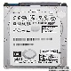
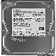
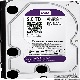

Твердий магнітний диск, або Накопичувач на магнітних дисках (англ. Hard (magnetic) disk drive, англ. HDD), у комп'ютерному сленгу — «вінчестер» (від англ. winchester), — магнітний диск, основа якого виконана з твердого матеріалу. У більшості ЕОМ виконує функцію енергонезалежного носія інформації (комп'ютерної пам'яті чи нагромаджувача інформації) з довільним доступом
- 
Hitachi (HGST) Travelstar Z7K500 500GB 7200rpm 32MB
Характеристики - 
Toshiba 500GB 7200rpm 32MB
Характеристики - 
Western Digital Purple 2TB 64MB
Характеристики